RANCANG BANGUN INSTRUMENTASI SENSOR TUNNELING MAGNETORESISTANCE BERBASIS NANOFIBER Fe3O4/PVA-SITRAT-ADH UNTUK DETEKSI FORMALIN PADA BAKSO MENGGUNAKAN KOMPARASI MODEL SVM DAN QSVC
Integrasi Nanokomposit Magnetik, Rantai Akuisisi Presisi AD623-ADS1115, dan Quantum Machine Learning
- Nama Lengkap: Fahry Rizky Samsudin
- Nomor Induk (NIM): 1237030018
- Program Studi: Fisika, FST, UIN Sunan Gunung Djati Bandung
- Tahun Akademik: 2026
- Pembimbing I: Mada Sanjaya W.S., Ph.D.
- Pembimbing II: Yudha Satya Perkasa, M.T.
- Mitra Industri: Bolabot Techno Robotic Institute Bandung
- Periode Riset: September - Desember 2026
- Nama Entitas: Bolabot Techno Robotic Institute
- Pendiri & Direktur: Mada Sanjaya W.S., Ph.D. (Berdiri sejak 2010 dari inisiatif PICO / KoTaRo)
- Lokasi Fasilitas: Jl. Sauyunan VI No. 10 Blok F6, Bandung, Jawa Barat
- Fasilitas Laboratorium: Lab Fabrikasi 3D, Lab Sintesis Kimia Nanomaterial, Lab Kalibrasi Medan Helmholtz, Stasiun Komputasi AI & Robotika
- Durasi Riset: September - Desember 2026 (4 Bulan Efektif)
- Pilar 1: Robotika Edukasi & Otomasi: Platform edukasi mekatronika dan mikrokontroler nasional.
- Pilar 2: Robotika Medis & Rehabilitasi: Pengembangan perangkat bantu terapi dan eksoskeleton medis.
- Pilar 3: Sensor Biomedis Cerdas: Rancang bangun biosensor berbasis nanokomposit magnetik (GMR & TMR) untuk keamanan pangan dan klinis.
- Pilar 4: Komputasi AI & Quantum ML: Penerapan model machine learning klasik dan algoritma kuantum (QSVC) pada sistem tertanam.
- Status Regulasi: Formalin dilarang keras sebagai pengawet makanan menurut Permenkes RI.
- Toksisitas Kronis: Karsinogenik Golongan 1 (IARC), pemicu iritasi mukosa lambung, gagal ginjal, dan kanker nasofaring.
- Temuan Lapangan: Studi di Pekanbaru menemukan kadar formalin bakso mencapai 4.506 ppm; temuan positif di Padang dan Yogyakarta.
- Ambang Toleransi: Otoritas EFSA menetapkan batas asupan aman formalin hanya 100 ppm, paparan kumulatif sangat berbahaya.
- Uji Kimia Kolorimetri (KMnO4): Bersifat kualitatif semata, rawan positif palsu oleh senyawa pereduksi alami daging, destruktif.
- Kromatografi (HPLC / GC-MS): Biaya instrumen mahal, preparasi sampel rumit berjam-jam, butuh teknisi ahli, tidak portabel.
- Spektrofotometri UV-Vis: Memerlukan reagen toksik (asam kromotropat), tidak adaptif untuk inspeksi pasar tradisional.
Pengembangan biosensor spintronika portabel berbasis Tunneling Magnetoresistance (TMR) dengan nanofiber penangkap selektif ADH dan komputasi Quantum Machine Learning untuk inspeksi cepat, kuantitatif, berbiaya terjangkau, dan non-destruktif.
| Parameter Evaluasi | Efek Hall Konvensional | Giant Magnetoresistance (GMR) | Tunneling Magnetoresistance (TMR) |
|---|---|---|---|
| Prinsip Fisika Dasar | Gaya Lorentz defleksi muatan | Spin-dependent scattering (logam) | Spin-dependent quantum tunneling (isolator) |
| Struktur Lapisan | Semikonduktor silikon/GaAs | Ferromagnet / Spacer Konduktor Cu | Ferromagnet / Insulator Tipis (MgO) |
| Rasio Magnetoresistansi | < 1% (Sangat Rendah) | 10% - 20% pada suhu ruang | > 100% - 200% pada suhu ruang |
| Sensitivitas Medan | Rendah (0.1 - 10 V/T) | Menengah (10 - 50 V/T) | Sangat Tinggi (hingga 6x lipat sinyal GMR) |
| Konsumsi Daya | Menengah (milliwatt) | Rendah (milliwatt) | Ultra-rendah (mikrowatt) |
| Platform Sensor Terpilih | - | AA005-02 (Riset Terdahulu) | ALT023-10E NVE (Penelitian Ini) |
| Parameter Komparasi | Glutaraldehida (GA) [Umum] | Adipic Acid Dihydrazide (ADH) [Ini] |
|---|---|---|
| Toksisitas | Toksik, uap iritatif, karsinogenik | Non-toksik, aman, ramah lingkungan |
| Gugus Reaktif | Dialdehida (-CHO dan -CHO) | Dihidrazida (-NH-NH2 dan -NH-NH2) |
| Interaksi Formalin | Ambiguitas (sama-sama aldehida) | Reaksi spesifik membentuk ikatan hidrazon |
| Fungsi Kimiawi | Crosslinker umum non-selektif | Formaldehyde scavenger berdaya tangkap kuat |
| Crosslinker Utama | Mandiri (GA) | Asam Sitrat Termal 130 C (tahan air) |
Pengikatan formalin oleh gugus hidrazida ADH mengubah konformasi rantai polimer dan momen dipol magnetik stray nanopartikel Fe3O4, menggeser resistansi sensor TMR secara terukur.
- Ekstrak Daun Kelor: Moringa oleifera kaya polifenol & flavonoid alami sebagai pereduksi ion Fe3+/Fe2+ dan capping agent.
- Superparamagnetik: Nanopartikel Fe3O4 sub-20 nm memiliki suseptibilitas tinggi tanpa histeresis remanen.
- Matriks PVA 10% wt: Menghasilkan jejaring serat homogen berdiameter nanometer melalui elektrospinning.
- Curing 130 C 1.5 Jam: Mengaktifkan esterifikasi asam sitrat agar nanofiber tidak larut dalam cairan sampel bakso.
- Prinsip Kerja: Memaksimalkan margin pemisah hyperplane antarkelas konsentrasi formalin.
- Kernel RBF Gauss: Mentransformasikan vektor fitur sinyal non-linear ke ruang berdimensi tak terhingga.
- Keunggulan: Komputasi cepat, jaminan konvergensi global, stabil untuk sampel data berdimensi sedang.
- Keterbatasan: Kinerja menurun apabila sinyal sensor mengalami pergeseran baseline atau derau fluktuatif ekstrem.
- Prinsip Kerja: Memetakan fitur sinyal ke status kuantum register n-qubit di ruang Hilbert 2^n melalui sirkuit uniter (ZZFeatureMap).
- Quantum Kernel: Mengukur jarak derajat ketumpangtindihan status kuantum (Quantum State Fidelity) antar-data.
- Potensi Keunggulan: Mampu mengekstraksi korelasi fitur non-linear kompleks yang sulit dipisahkan kernel klasik dan lebih tahan derau gaussian.
- Relevansi: Studi perdana komparasi SVM dan QSVC untuk biosensor TMR keamanan pangan di Indonesia.
Fokus eksklusif pada deteksi formalin (larutan formaldehida); bahan tambahan pangan lain (seperti boraks atau pewarna tekstil) tidak dianalisis mendalam.
Pengujian sensor diawali larutan standar formalin bertingkat (mg/L terkontrol) sebagai dasar kurva kalibrasi sebelum diaplikasikan pada ekstrak sampel bakso riil.
Material sensor dibatasi pada nanofiber Fe3O4/PVA hasil elektrospinning dengan taut-silang asam sitrat (curing 130 C) dan fungsionalisasi ADH.
Mekanisme pengenalan formalin oleh gugus hidrazida ADH diperlakukan sebagai hipotesis yang diuji secara empiris, bukan mekanisme aksioma pasti.
Dibatasi pada evaluasi sensitivitas, linearitas, batas deteksi (LOD), dan stabilitas sinyal; ketahanan mekanik jangka panjang tidak menjadi fokus utama.
Dibatasi pada komparasi algoritma klasik SVM (RBF kernel) dan model kuantum QSVC yang disimulasikan berbasis quantum feature map Qiskit.
Menghadirkan kajian komprehensif mengenai dinamika interaksi molekul formalin dengan reseptor nanofiber polimerik magnetik serta penerapan komputasi Quantum Machine Learning untuk pengolahan sinyal biosensor spintronika.
Menyediakan prototipe instrumen biosensor cerdas portabel yang teruji secara fisis dan siap dihilirisasi ke tahap produksi komersial alat inspeksi pangan cepat di laboratorium maupun industri pangan.
Menyediakan alternatif metode skrining formalin bakso yang cepat, non-destruktif, terjangkau, dan dapat dioperasikan langsung di lapangan untuk mencegah peredaran makanan karsinogenik.
Mendorong kemandirian teknologi biosensor domestik berbasis komponen terbuka dan sintesis bahan alam lokal daun kelor guna mengurangi ketergantungan impor alat laboratorium berbiaya tinggi.
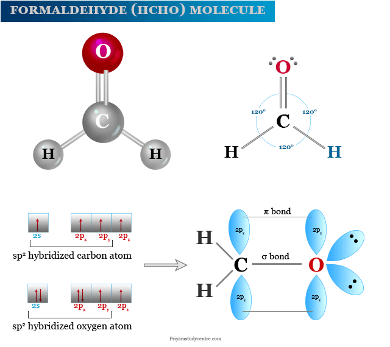
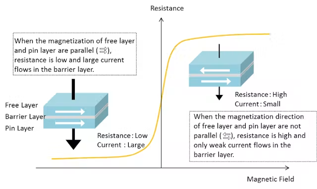
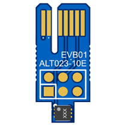
- Catu Daya DC Variabel: Rentang tegangan 0.0 - 16.0 V dengan pembacaan arus kontinu.
- Resistansi Kumparan: R ~ 10 Ohm, mengalirkan arus maksimal hingga ~ 1.6 A.
- Rentang Medan Magnetik: 0 - 11.5 mT (dapat dibalik polaritas kabel untuk medan negatif hingga -4.0 mT).
- Pengaturan Eksternal: Diatur secara fisik manual; GUI mencatat parameter Vhelm, Ihelm, dan Bteslameter sebagai ground truth kalibrasi.
- Verifikasi Fluks: Dikalibrasi langsung menggunakan teslameter digital tersertifikasi di titik pusat sensor.
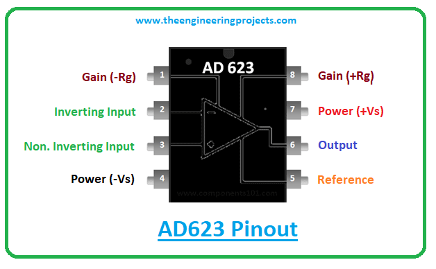
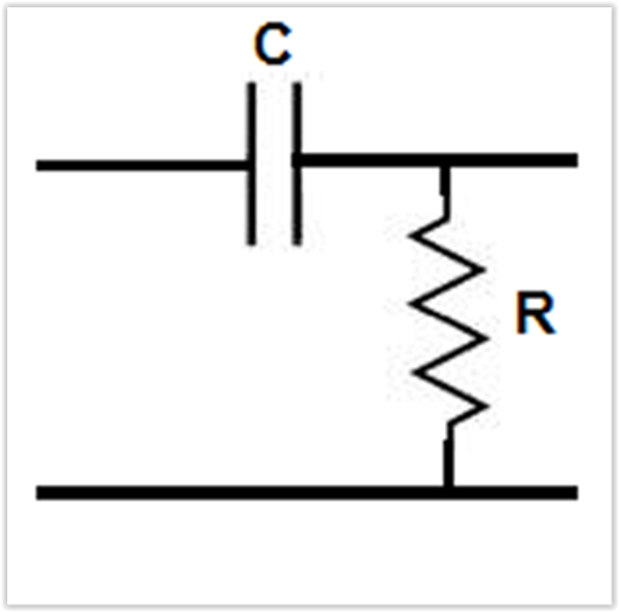
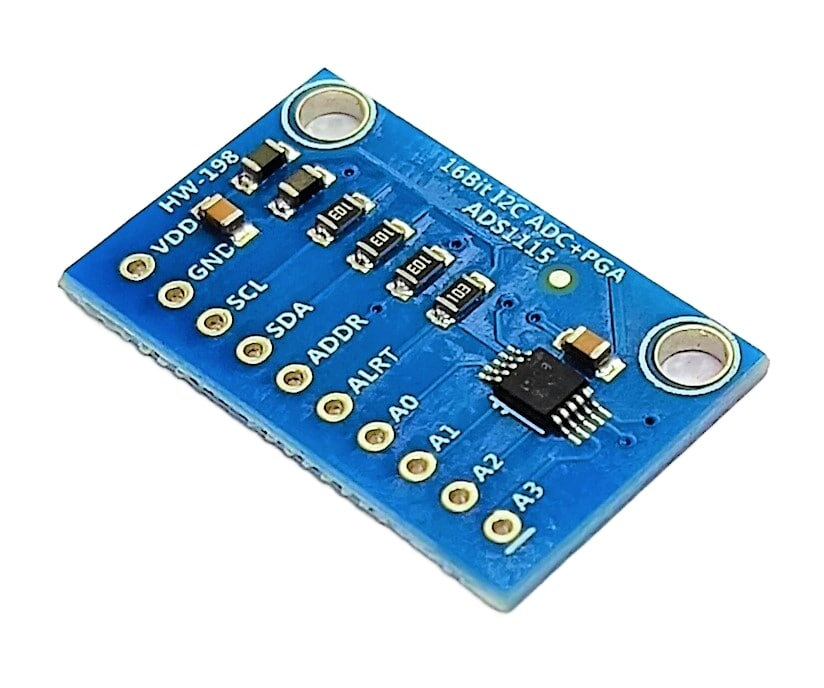
- Fitokimia Moringa oleifera: Ekstrak daun kelor kaya senyawa bioaktif polifenol, flavonoid, dan asam askorbat.
- Agen Pereduksi & Capping: Mereduksi prekursor besi (FeCl3 dan FeCl2) dan melapisi permukaan nanopartikel agar stabil tanpa aglomerasi.
- Bebas Bahan Toksik: Meniadakan ketergantungan pada surfaktan sintetis berbahaya (CTAB/asam oleat), aman untuk analisis pangan.
- Karakter Superparamagnetik: Nanopartikel Fe3O4 sub-20 nm memberikan respons magnetisasi kuat saat ada medan dan seketika nol saat medan ditiadakan.
- Formulasi Optimum 10% wt: Menghasilkan viskositas larutan sol yang tepat untuk stabilitas jet elektrospinning tanpa pembentukan beads.
- Rantai Karbon Hidrofilik: Kelimpahan gugus hidroksil (-OH) memfasilitasi pembentukan ikatan hidrogen intermolekuler yang kokoh.
- Distribusi Nanopartikel: Mengikat Fe3O4 dan molekul ADH secara homogen di sepanjang poros serat nanofiber.
- Biokompatibilitas Tinggi: Aman dan tidak berinteraksi merusak dengan matriks protein bakso.
- Reaksi Esterifikasi: Gugus karboksilat (-COOH) asam sitrat bereaksi dengan gugus -OH rantai PVA membentuk ikatan ester kovalen silang.
- Suhu Curing Optimal 130 C: Pemanasan selama 1.5 jam pada 130 C memaksimalkan ikatan taut-silang tanpa merusak kestabilan gugus hidrazida ADH.
- Ketahanan Air (Water Insoluble): Memastikan membran nanofiber tidak melarut atau terdegradasi saat ditetesi cairan ekstrak analit bakso.
- Enkapsulasi Fungsional ADH: Gugus hidrazida terminal ADH tetap bebas terekspos di permukaan serat, bertindak sebagai penangkap formalin selektif.
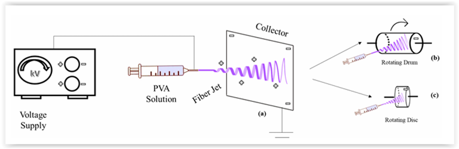
- Input Vektor 5 Fitur: Menerima data dinamis terstandarisasi: dVmax, waktu respons, laju slope awal, Vsteady, dan AUC.
- Prapemrosesan Standard Scaler: Menormalkan skala fitur ke distribusi mean 0 dan varians 1 agar tidak didominasi fitur berskala besar.
- Validasi Silang (5-Fold CV): Membagi dataset menjadi 5 lipatan bergantian untuk memastikan model general dan tidak overfitting.
- Metrik Evaluasi: Mengukur Akurasi, Presisi, Recall, F1-Score, dan matriks konfusi kelas sampel bakso.
| Fitur Pembanding | SVM Klasik | QSVC Kuantum (Qiskit) |
|---|---|---|
| Ruang Representasi | Euclidean tak berhingga | Ruang Hilbert 2^n qubit |
| Pemetaan Fitur | Fungsi eksponensial Gauss | Sirkuit kuantum & keterikatan (entanglement) |
| Kalkulasi Kernel | Jarak matriks numerik | Probabilitas fidelitas status kuantum |
| Ketahanan Derau | Sensitif noise fluktuatif | Resilien terhadap derau gaussian |
| Platform Eksekusi | Scikit-Learn (CPU) | Qiskit Aer Statevector Simulator |
| Kategori | Item / Instrumen Spesifik | Spesifikasi / Parameter Teknis | Fungsi Utama dalam Penelitian |
|---|---|---|---|
| Hardware | Sensor TMR ALT023-10E | Bipolar Wheatstone bridge, linear +-1.0 mT, Vcc 5V | Transduser medan magnetik distorsi formalin |
| Hardware | In-Amp AD623 & ADS1115 | Catu 5V, VREF 2.50V, ADC 16-Bit I2C | Pengkondisi sinyal & digitalisasi presisi |
| Hardware | Kumparan Helmholtz | R ~ 10 Ohm, 0 - 16 V DC, 0 - 11.5 mT | Pembangkit medan magnet acuan homogen |
| Hardware | Mikrokontroler & Host | Arduino Uno R3 & Raspberry Pi 5 | Akuisisi serial & stasiun komputasi ML edge |
| Bahan Kimia | Ekstrak Daun Kelor & Besi | Moringa oleifera, FeCl3 & FeCl2 (rasio 2:1) | Green synthesis nanopartikel superparamagnetik Fe3O4 |
| Bahan Kimia | Polimer PVA, Sitrat, ADH | PVA 10% wt, Asam Sitrat, ADH 98% | Matriks nanofiber elektrospinning selektif formalin |
| Sampel Uji | Formalin & Bakso Riil | Standar HCHO 37% & Bakso Pasar Tradisional | Pembuatan kurva kalibrasi & validasi klasifikasi |
- Tahap 1: Desain & Fabrikasi Hardware: Perancangan skematik terisolasi grounding, perakitan AD623-ADS1115, dan cetak 3D casing.
- Tahap 2: Sintesis Nanomaterial: Ekstraksi kelor, kopresipitasi Fe3O4, elektrospinning sol PVA-sitrat-ADH, curing termal 130 C.
- Tahap 3: Karakterisasi & Kalibrasi: Kalibrasi medan Helmholtz dengan teslameter, uji kurva dV/dB sensor TMR.
- Tahap 4: Pengujian Sampel Bakso: Maserasi bakso, sentrifugasi 4000 rpm 10 menit, perekaman sinyal dinamis 5 detik.
- Tahap 5: Ekstraksi Fitur & Pelatihan ML: Ekstraksi 5 fitur dinamis, 5-Fold Cross Validation komparasi SVM dan QSVC.
- Tahap 6: Evaluasi & Deployment: Analisis akurasi, uji ketahanan derau, ekspor model .pkl ke Raspberry Pi 5.
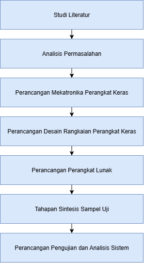
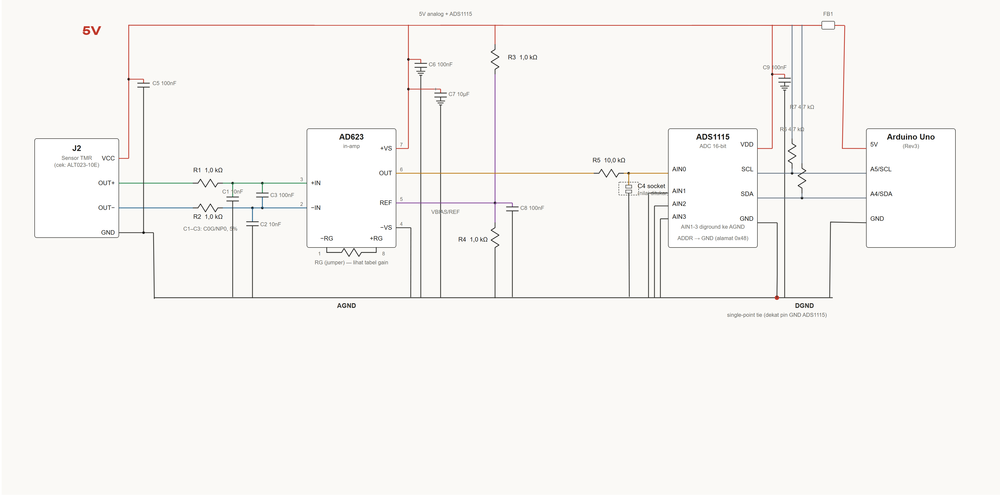
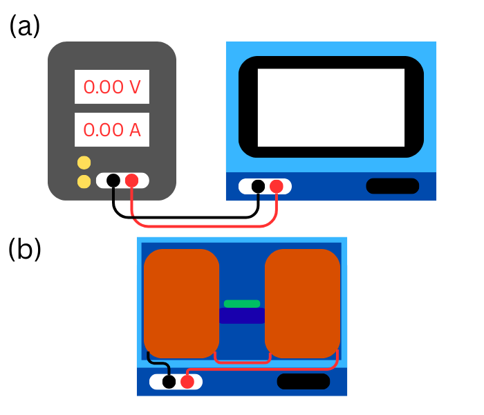
- Star Grounding: Pemisahan ground analog dan digital untuk meniadakan ground loop.
- Material Non-Magnetik: Housing sensor menggunakan filament PLA dan statif akrilik murni.
- Presisi Posisi: Menjamin sensor TMR tepat berada di pusat medan homogen Helmholtz.
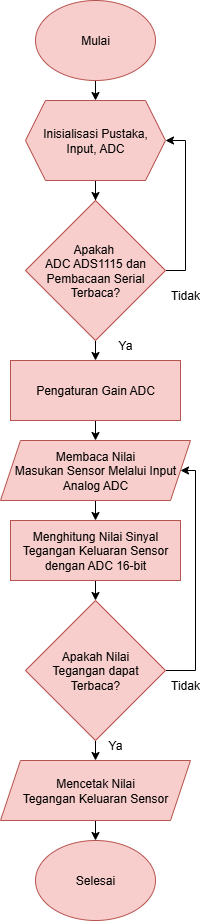
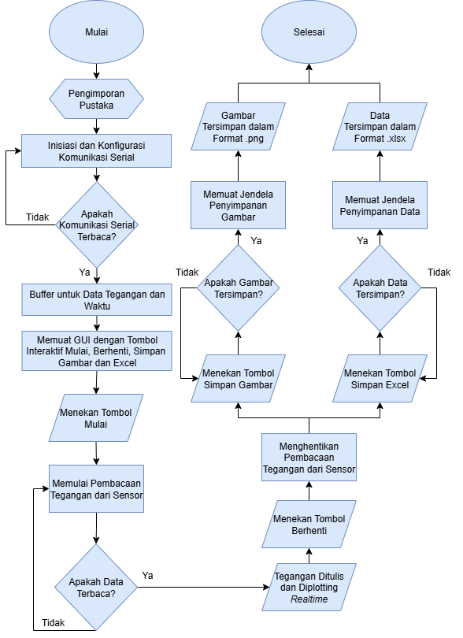
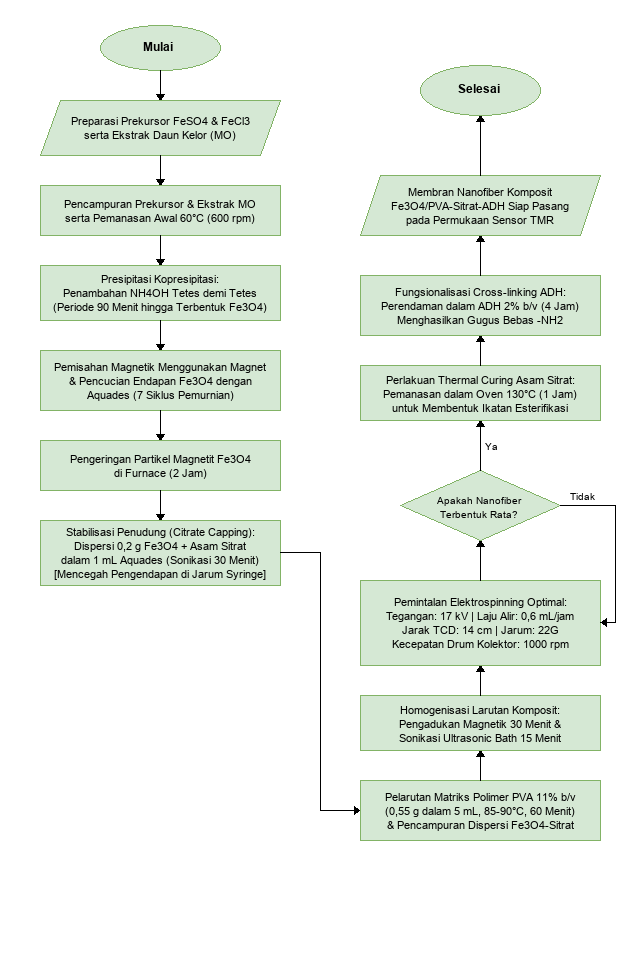
- Ekstraksi Daun Kelor: 50 g daun segar dalam 250 mL akuades, dipanaskan pada 80 C selama 30 menit, disaring kertas Whatman.
- Kopresipitasi Fe3O4: FeCl3 dan FeCl2 (rasio molar 2:1) + 20 mL ekstrak kelor, titrasi NaOH 2 M hingga pH 11 pada 70 C, dicuci hingga pH netral.
- Formulasi Sol Gel: PVA 10% wt + Fe3O4 2% wt + Asam Sitrat 5% wt + ADH 3% wt diaduk konstan pada 60 C hingga homogen.
- Parameter Elektrospinning: Tegangan tinggi 15 kV, laju alir syringe pump 0.5 mL/jam, jarak jarum ke drum 15 cm, drum 300 rpm.
- Curing Termal Final: Oven pemanas pada suhu 130 C selama 1.5 jam untuk aktivasi ikatan ester tahan air.
- Sapuan Arus DC: Mengatur power supply dari 0.0 A hingga 1.6 A (tegangan 0 - 16 V) dengan kenaikan bertahap 0.1 A.
- Perekaman Teslameter: Mengukur medan magnet riil B (mT) di pusat kumparan secara simultan menggunakan teslameter digital.
- Regresi Linear Kalibrasi: Memperoleh persamaan linear B = k * I dengan korelasi R^2 > 0.999 sebagai faktor konversi arus ke medan magnet.
- Verifikasi Polaritas: Menguji pembalikan polaritas kabel kumparan untuk sapuan medan negatif hingga -4.0 mT.
- Perekaman Tegangan Vout: Mencatat respons tegangan AD623-ADS1115 pada setiap titik medan magnet B yang diterapkan.
- Penentuan Rentang Linear: Menetapkan batas linearitas operasional sensor (+-1.0 mT) di mana respons tegangan berbanding lurus dengan medan.
- Sensitivitas Diferensial (dV/dB): Menggunakan fitting spline numerik pada modul analysis.py untuk mengekstrak sensitivitas lokal dV/dB (mV/mT).
- Penyimpanan Otomatis JSON: Menyimpan nilai intercept dan slope secara otomatis untuk koreksi realtime GUI.
- Maserasi Daging Bakso: 10 gram sampel bakso dihaluskan dan dilarutkan dalam 50 mL akuades (rasio 1:5 w/v).
- Sentrifugasi Fasa: Disentrifugasi pada kecepatan 4000 rpm selama 10 menit untuk memisahkan lipid dan protein kasar.
- Pengambilan Supernatan: Larutan jernih supernatan diambil sebagai analit bebas endapan.
- Aplikasi Mikropipet: Sebanyak 20 mikroliter analit diteteskan di atas membran nanofiber sensor TMR.
| Simbol | Nama Fitur Dinamis | Formulasi Matematika | Relevansi Fisik |
|---|---|---|---|
| dV_max | Amplitudo Puncak | |V_peak - V_baseline| | Kekuatan respons analit |
| t_response | Waktu Respons (90%) | t(0.9*dV_max) - t_0 | Kinetika reaksi adisi ADH |
| (dV/dt)_0 | Slope Transien Awal | Delta V / Delta t (awal) | Laju difusi awal molekul |
| V_steady | Tegangan Tunak | Mean(V(t)) pada t jenuh | Keseimbangan ikatan hidrazon |
| AUC | Area Under Curve | Integral [V(t) - V_0] dt | Akumulasi total energi sinyal |
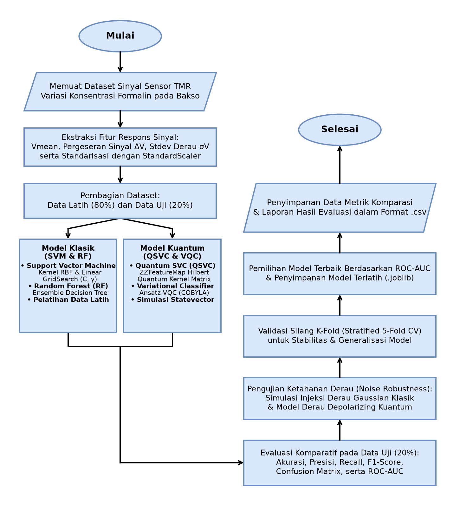
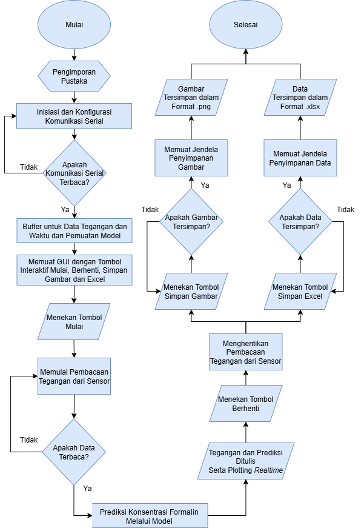
- Format Model: Serialisasi model klasifikasi terbaik ke file biner .pkl via Joblib.
- Perangkat Keras Edge: Raspberry Pi 5 (8GB RAM, Broadcom Quad-core ARM 2.4GHz).
- Tampilan Hasil: Layar sentuh kapasitif terintegrasi menampilkan status keamanan bakso seketika.
| Tahapan Kegiatan Riset | B1 (Sep) | B2 (Okt) | B3 (Nov) | B4 (Des) |
|---|---|---|---|---|
| Desain Hardware, Casing 3D & Skematik | [ X ] | |||
| Kalibrasi Kumparan Helmholtz & TMR ALT023 | [ X ] | |||
| Green Synthesis Fe3O4 Kelor & Elektrospinning PVA | [ X ] | |||
| Curing Termal 130 C & Karakterisasi Nanofiber ADH | [ X ] | |||
| Uji Larutan Formalin Bertingkat & Sampel Bakso | [ X ] | |||
| Ekstraksi 5 Fitur Sinyal & Pembentukan Dataset | [ X ] | |||
| Pelatihan & Komparasi Model SVM vs QSVC (Qiskit) | [ X ] | |||
| Deployment ke Raspberry Pi 5 & Penulisan Skripsi | [ X ] |
- Publikasi Ilmiah: 1 Artikel pada Prosiding Internasional terindeks Scopus (IEEE / AIP) atau Jurnal Nasional Terakreditasi SINTA 2.
- Prototipe Fisik: Unit biosensor TMR portabel terintegrasi casing 3D siap uji.
- Karya Ilmiah Akhir: Dokumen Skripsi lengkap Sarjana Fisika UIN SGD Bandung.